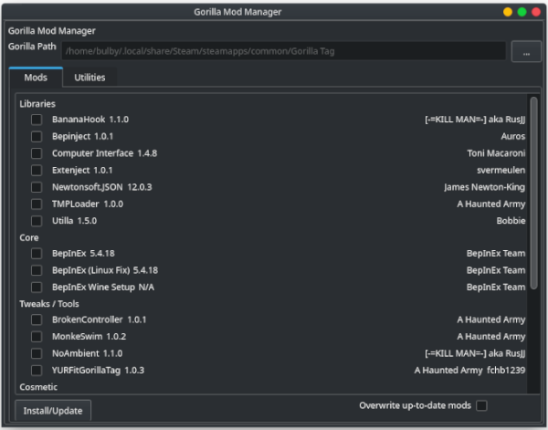

Whenever I write a UI app I immediately think of Haxe. HaxeUI is my favorite UI framework (and my only UI framework) that can compile to javascript, QT (which is what I prefer), GTK, windows, and other targets. It uses css to style (although not to the same extent as html) and in general looks nice.
An image of QT Gorilla Mod Manager
I've made a mod manager based off of monke mod manager for all platforms (as C# UI, in my experience, almost never runs on linux).
While in a different language, this is related to modding in general. My Feh EMI mod and Compact Machines port for minecraft have a similar idea.